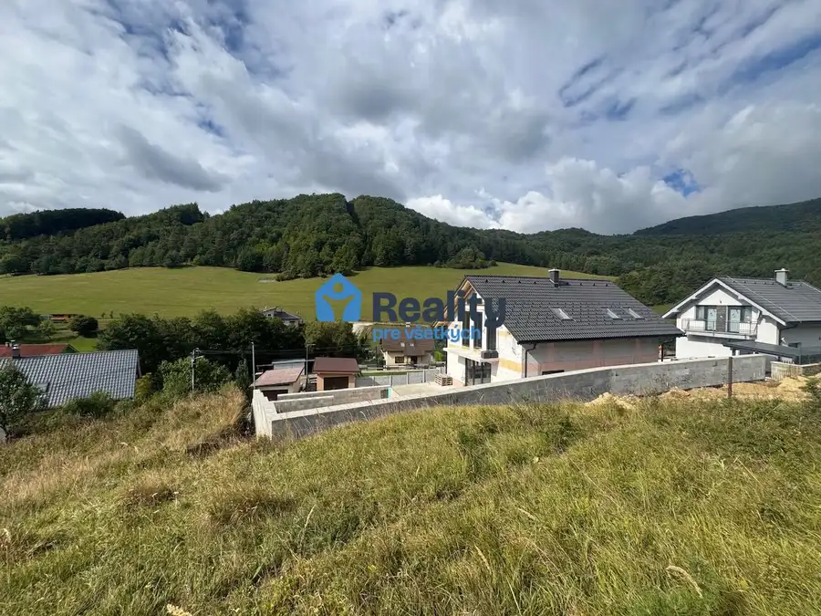
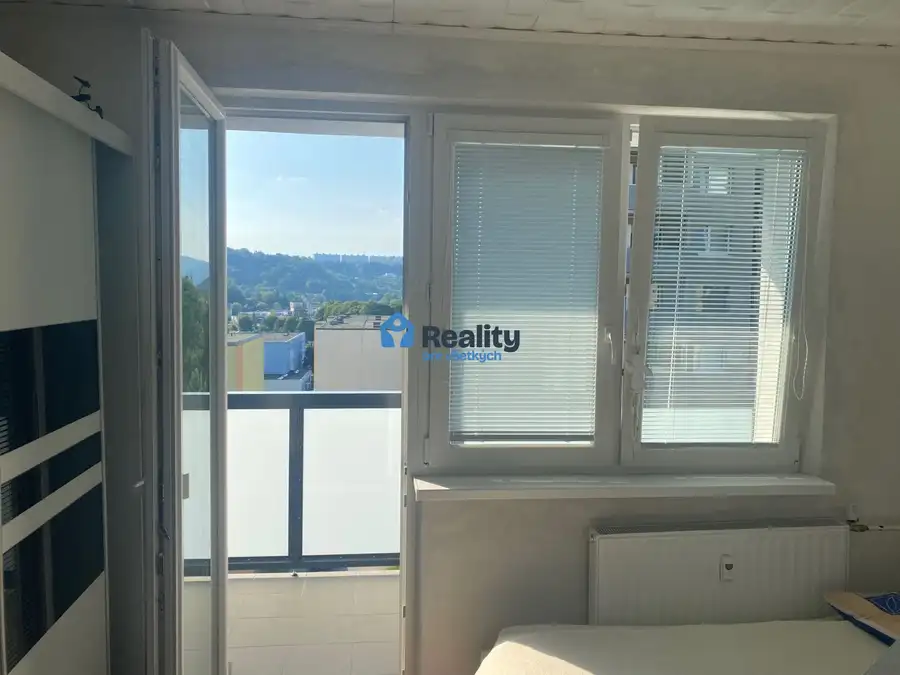
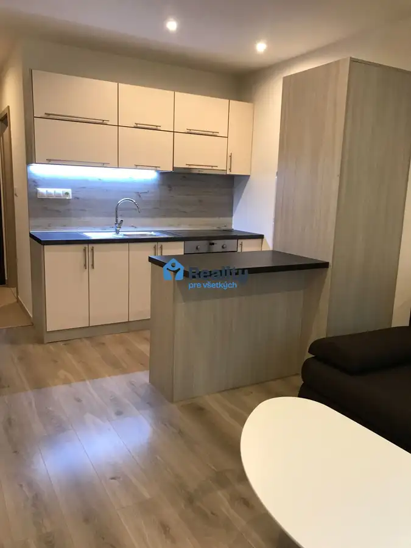

Prenájom: Kompletne zariadené, reprezentatívne kancelárie 71,5 m²,PB
Považská Bystrica
- Plocha71.5 m²
- Poschodie1.
- Stavúplne prerobený
- Vlastníctvofiremné
- Energetická triedaA
O nehnuteľnosti
Realitná kancelária REALITY Pre Všetkých ponúka na prenájom moderné nebytové priestory s celkovou výmerou 71,5 m², situované na 1. nadzemnom podlaží novej administratívno-prevádzkovej budovy. Objekt sa nachádza v uzavretom, bezpečnom areáli v priemyselnej časti Považskej Bystrice, v lokalite Považské Podhradie. Priestory sú kompletne zariadené nábytkom a pripravené na okamžité reprezentatívne sídlo firmy alebo e-shop bez ďalších investícií.Základné informácie:Lokalita: Považské Podhradie, priemyselná zóna Považská BystricaTyp objektu: Novostavba v uzavretom areáli so vstupnou bránouUmiestnenie: 1. nadzemné podlažie (1. N.P.)Celková rozloha: 71,5 m²Stav a vybavenie: Nové moderné priestory, kompletne vybavené kancelárskym nábytkomDostupnosť: IhneďDispozičné riešenie podľa pôdorysu:Veľká kancelária (Open Office): Svetlý a flexibilný pracovný priestor kompletne vybavený písacími stolmi a stoličkami.Zasadacia miestnosť: Samostatná, plne zariadená miestnosť na firemné porady a obchodné rokovania.Kuchynka: Kompletne vybavená kuchynská časť pre zázemie zamestnancov.Sociálne zázemie: Toalety a hygienický uzol prístupné priamo z chodby.Bezpečnosť a technológie:Zabezpečovací systém: Budova a priestory sú chránené moderným alarmom.Video vrátnik: Bezpečné a pohodlné overovanie a vpúšťanie návštev na diaľku.Uzavretý areál: Prístup cez vstupnú bránu zabezpečuje kontrolovaný pohyb osôb a vozidiel.Parkovanie:1 parkovacie miesto je už zahrnuté priamo v cene nájmu.Možnosť prenájmu ďalších parkovacích miest za cenu 50€ bez DPH / mesiac / miesto.Cena prenájmu:Nájomné: 8,50€ / m² / mesiac bez DPH (cca 607,75€ bez DPH / mesiac za celý priestor)Energie: 90€ / mesiac (zálohové platby)Výhody lokality:Okamžité napojenie na diaľnicu D1 (smer Žilina / Bratislava) do 2 minút.Bezproblémový prístup pre osobné aj nákladné autá (dodávky) priamo do areálu.Kontakt pre informácie a obhliadky:Kontaktná osoba: JUDr. Vladimír ŽitníkTelefónne číslo: E-mail: www.rpv.skRealitná kancelária: REALITY PV s.r.o. (Moyzesova 816/100, Považská Bystrica)
Parametre
| Celková rozloha | 71.5 m² |
|---|---|
| Úžitková plocha | 71.5 m² |
| Poschodie | 1/vyššie poschodie |
| Vlastníctvo | firemné |
| Stav | úplne prerobený |
| Internet | optika |
| Postavené z | Zmiešané |
| Zariadenie | zariadený |
| Zateplený objekt | áno |
| Energetický certifikát | A |
| Bezbariérový prístup | nie |
| Okná | hliníkové |
| Novostavba | áno |
| Dátum zverejnenia | 18. 8. 2026 |
Kde to je
Mohlo by Vás zaujímať

Pozemok9 48 000 €Predaj stavebný pozemok obec Bodiná, 2500m2 Považská Bystrica 2500 m² Na susedných parcelách už prebieha výstavba. Konečná cena je 48000eur! - výstavba rodinný dom, chalupa, chata -výmera pozemku je 2484 m2, šírka 23m…
BytNové9 Cena dohodouPrenájom menší byt na sídlisku SNP, loggia, zariadený Považská Bystrica 1-izbový30 m²7. podlažie Byt je po staršej kompletnej rekonštrukcii na 7. poschodí, bytový dom po rekonštrukcii /nové výťahy, zateplený, bezbariérový vstup.../. Byt je…
BytNové7 Cena dohodouPrenájom menší byt Lánska, prerobený, zariadený Považská Bystrica 1-izbový24 m²9. podlažie Byt je po staršej kompletnej rekonštrukcii na 9. poschodí, bytový dom po rekonštrukcii /nové výťahy, zateplený, bezbariérový vstup.../. Byt je…